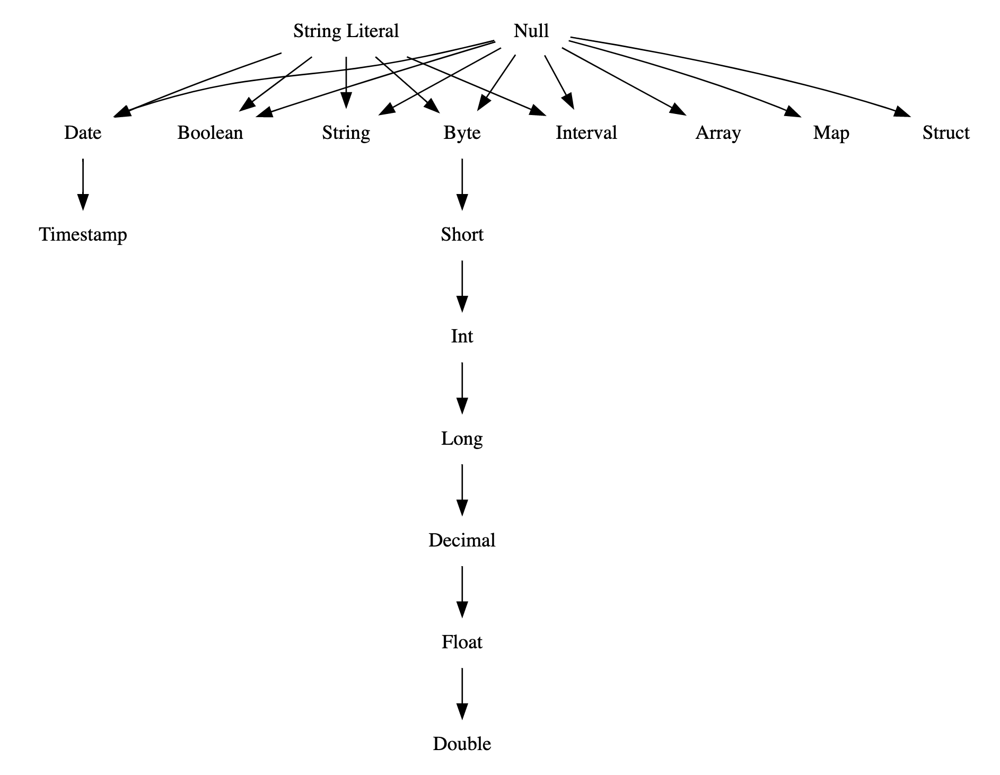

ANSI Compliance
In Spark SQL, there are two options to comply with the SQL standard: spark.sql.ansi.enabled and spark.sql.storeAssignmentPolicy (See a table below for details).
When spark.sql.ansi.enabled is set to true, Spark SQL uses an ANSI compliant dialect instead of being Hive compliant. For example, Spark will throw an exception at runtime instead of returning null results if the inputs to a SQL operator/function are invalid. Some ANSI dialect features may be not from the ANSI SQL standard directly, but their behaviors align with ANSI SQL’s style.
Moreover, Spark SQL has an independent option to control implicit casting behaviours when inserting rows in a table. The casting behaviours are defined as store assignment rules in the standard.
When spark.sql.storeAssignmentPolicy is set to ANSI, Spark SQL complies with the ANSI store assignment rules. This is a separate configuration because its default value is ANSI, while the configuration spark.sql.ansi.enabled is disabled by default.
| Property Name | Default | Meaning | Since Version |
|---|---|---|---|
spark.sql.ansi.enabled |
false | When true, Spark tries to conform to the ANSI SQL specification: 1. Spark SQL will throw runtime exceptions on invalid operations, including integer overflow errors, string parsing errors, etc. 2. Spark will forbid using the reserved keywords of ANSI SQL as identifiers in the SQL parser. 3. Spark will use different type coercion rules for resolving conflicts among data types. The rules are consistently based on data type precedence. |
3.0.0 |
spark.sql.storeAssignmentPolicy |
ANSI | When inserting a value into a column with different data type, Spark will perform type conversion. Currently, we support 3 policies for the type coercion rules: ANSI, legacy and strict. 1. With ANSI policy, Spark performs the type coercion as per ANSI SQL. In practice, the behavior is mostly the same as PostgreSQL. It disallows certain unreasonable type conversions such as converting string to int or double to boolean. On inserting a numeric type column, an overflow error will be thrown if the value is out of the target data type’s range. 2. With legacy policy, Spark allows the type coercion as long as it is a valid Cast, which is very loose. e.g. converting string to int or double to boolean is allowed. It is also the only behavior in Spark 2.x and it is compatible with Hive. 3. With strict policy, Spark doesn’t allow any possible precision loss or data truncation in type coercion, e.g. converting double to int or decimal to double is not allowed. |
3.0.0 |
The following subsections present behaviour changes in arithmetic operations, type conversions, and SQL parsing when the ANSI mode enabled. For type conversions in Spark SQL, there are three kinds of them and this article will introduce them one by one: cast, store assignment and type coercion.
Arithmetic Operations
In Spark SQL, arithmetic operations performed on numeric types (with the exception of decimal) are not checked for overflows by default.
This means that in case an operation causes overflows, the result is the same with the corresponding operation in a Java/Scala program (e.g., if the sum of 2 integers is higher than the maximum value representable, the result is a negative number).
On the other hand, Spark SQL returns null for decimal overflows.
When spark.sql.ansi.enabled is set to true and an overflow occurs in numeric and interval arithmetic operations, it throws an arithmetic exception at runtime.
-- `spark.sql.ansi.enabled=true`
SELECT 2147483647 + 1;
java.lang.ArithmeticException: integer overflow
SELECT abs(-2147483648);
java.lang.ArithmeticException: integer overflow
-- `spark.sql.ansi.enabled=false`
SELECT 2147483647 + 1;
+----------------+
|(2147483647 + 1)|
+----------------+
| -2147483648|
+----------------+
SELECT abs(-2147483648);
+----------------+
|abs(-2147483648)|
+----------------+
| -2147483648|
+----------------+
Cast
When spark.sql.ansi.enabled is set to true, explicit casting by CAST syntax throws a runtime exception for illegal cast patterns defined in the standard, e.g. casts from a string to an integer.
The CAST clause of Spark ANSI mode follows the syntax rules of section 6.13 “cast specification” in ISO/IEC 9075-2:2011 Information technology — Database languages - SQL — Part 2: Foundation (SQL/Foundation), except it specially allows the following
straightforward type conversions which are disallowed as per the ANSI standard:
- NumericType <=> BooleanType
- StringType <=> BinaryType
- ArrayType => String
- MapType => String
- StructType => String
The valid combinations of source and target data type in a CAST expression are given by the following table.
“Y” indicates that the combination is syntactically valid without restriction and “N” indicates that the combination is not valid.
| Source\Target | Numeric | String | Date | Timestamp | Interval | Boolean | Binary | Array | Map | Struct |
|---|---|---|---|---|---|---|---|---|---|---|
| Numeric | Y | Y | N | N | N | Y | N | N | N | N |
| String | Y | Y | Y | Y | Y | Y | Y | N | N | N |
| Date | N | Y | Y | Y | N | N | N | N | N | N |
| Timestamp | N | Y | Y | Y | N | N | N | N | N | N |
| Interval | N | Y | N | N | Y | N | N | N | N | N |
| Boolean | Y | Y | N | N | N | Y | N | N | N | N |
| Binary | N | Y | N | N | N | N | Y | N | N | N |
| Array | N | Y | N | N | N | N | N | Y | N | N |
| Map | N | Y | N | N | N | N | N | N | Y | N |
| Struct | N | Y | N | N | N | N | N | N | N | Y |
In the table above, all the CASTs that can cause runtime exceptions are marked as red Y:
- CAST(Numeric AS Numeric): raise an overflow exception if the value is out of the target data type’s range.
- CAST(String AS (Numeric/Date/Timestamp/Interval/Boolean)): raise a runtime exception if the value can’t be parsed as the target data type.
- CAST(Array AS Array): raise an exception if there is any on the conversion of the elements.
- CAST(Map AS Map): raise an exception if there is any on the conversion of the keys and the values.
- CAST(Struct AS Struct): raise an exception if there is any on the conversion of the struct fields.
-- Examples of explicit casting
-- `spark.sql.ansi.enabled=true`
SELECT CAST('a' AS INT);
java.lang.NumberFormatException: invalid input syntax for type numeric: a
SELECT CAST(2147483648L AS INT);
java.lang.ArithmeticException: Casting 2147483648 to int causes overflow
SELECT CAST(DATE'2020-01-01' AS INT)
org.apache.spark.sql.AnalysisException: cannot resolve 'CAST(DATE '2020-01-01' AS INT)' due to data type mismatch: cannot cast date to int.
To convert values from date to int, you can use function UNIX_DATE instead.
-- `spark.sql.ansi.enabled=false` (This is a default behaviour)
SELECT CAST('a' AS INT);
+--------------+
|CAST(a AS INT)|
+--------------+
| null|
+--------------+
SELECT CAST(2147483648L AS INT);
+-----------------------+
|CAST(2147483648 AS INT)|
+-----------------------+
| -2147483648|
+-----------------------+
SELECT CAST(DATE'2020-01-01' AS INT)
+------------------------------+
|CAST(DATE '2020-01-01' AS INT)|
+------------------------------+
| null|
+------------------------------+
-- Examples of store assignment rules
CREATE TABLE t (v INT);
-- `spark.sql.storeAssignmentPolicy=ANSI`
INSERT INTO t VALUES ('1');
org.apache.spark.sql.AnalysisException: Cannot write incompatible data to table '`default`.`t`':
- Cannot safely cast 'v': string to int;
-- `spark.sql.storeAssignmentPolicy=LEGACY` (This is a legacy behaviour until Spark 2.x)
INSERT INTO t VALUES ('1');
SELECT * FROM t;
+---+
| v|
+---+
| 1|
+---+
Store assignment
As mentioned at the beginning, when spark.sql.storeAssignmentPolicy is set to ANSI(which is the default value), Spark SQL complies with the ANSI store assignment rules on table insertions. The valid combinations of source and target data type in table insertions are given by the following table.
| Source\Target | Numeric | String | Date | Timestamp | Interval | Boolean | Binary | Array | Map | Struct |
|---|---|---|---|---|---|---|---|---|---|---|
| Numeric | Y | Y | N | N | N | N | N | N | N | N |
| String | N | Y | N | N | N | N | N | N | N | N |
| Date | N | Y | Y | Y | N | N | N | N | N | N |
| Timestamp | N | Y | Y | Y | N | N | N | N | N | N |
| Interval | N | Y | N | N | N* | N | N | N | N | N |
| Boolean | N | Y | N | N | N | Y | N | N | N | N |
| Binary | N | Y | N | N | N | N | Y | N | N | N |
| Array | N | N | N | N | N | N | N | Y** | N | N |
| Map | N | N | N | N | N | N | N | N | Y** | N |
| Struct | N | N | N | N | N | N | N | N | N | Y** |
* Spark doesn’t support interval type table column.
** For Array/Map/Struct types, the data type check rule applies recursively to its component elements.
During table insertion, Spark will throw exception on numeric value overflow.
CREATE TABLE test(i INT);
INSERT INTO test VALUES (2147483648L);
java.lang.ArithmeticException: Casting 2147483648 to int causes overflow
Type coercion
Type Promotion and Precedence
When spark.sql.ansi.enabled is set to true, Spark SQL uses several rules that govern how conflicts between data types are resolved.
At the heart of this conflict resolution is the Type Precedence List which defines whether values of a given data type can be promoted to another data type implicitly.
| Data type | precedence list(from narrowest to widest) |
|---|---|
| Byte | Byte -> Short -> Int -> Long -> Decimal -> Float* -> Double |
| Short | Short -> Int -> Long -> Decimal-> Float* -> Double |
| Int | Int -> Long -> Decimal -> Float* -> Double |
| Long | Long -> Decimal -> Float* -> Double |
| Decimal | Decimal -> Float* -> Double |
| Float | Float -> Double |
| Double | Double |
| Date | Date -> Timestamp |
| Timestamp | Timestamp |
| String | String |
| Binary | Binary |
| Boolean | Boolean |
| Interval | Interval |
| Map | Map** |
| Array | Array** |
| Struct | Struct** |
* For least common type resolution float is skipped to avoid loss of precision.
** For a complex type, the precedence rule applies recursively to its component elements.
Special rules apply for string literals and untyped NULL. A NULL can be promoted to any other type, while a string literal can be promoted to any simple data type.
This is a graphical depiction of the precedence list as a directed tree: 
Least Common Type Resolution
The least common type from a set of types is the narrowest type reachable from the precedence list by all elements of the set of types.
The least common type resolution is used to:
- Decide whether a function expecting a parameter of a type can be invoked using an argument of a narrower type.
- Derive the argument type for functions which expect a shared argument type for multiple parameters, such as coalesce, least, or greatest.
- Derive the operand types for operators such as arithmetic operations or comparisons.
- Derive the result type for expressions such as the case expression.
- Derive the element, key, or value types for array and map constructors. Special rules are applied if the least common type resolves to FLOAT. With float type values, if any of the types is INT, BIGINT, or DECIMAL the least common type is pushed to DOUBLE to avoid potential loss of digits.
-- The coalesce function accepts any set of argument types as long as they share a least common type.
-- The result type is the least common type of the arguments.
> SET spark.sql.ansi.enabled=true;
> SELECT typeof(coalesce(1Y, 1L, NULL));
BIGINT
> SELECT typeof(coalesce(1, DATE'2020-01-01'));
Error: Incompatible types [INT, DATE]
> SELECT typeof(coalesce(ARRAY(1Y), ARRAY(1L)));
ARRAY<BIGINT>
> SELECT typeof(coalesce(1, 1F));
DOUBLE
> SELECT typeof(coalesce(1L, 1F));
DOUBLE
> SELECT (typeof(coalesce(1BD, 1F)));
DOUBLE
-- The substring function expects arguments of type INT for the start and length parameters.
> SELECT substring('hello', 1Y, 2);
he
> SELECT substring('hello', '1', 2);
he
> SELECT substring('hello', 1L, 2);
Error: Argument 2 requires an INT type.
> SELECT substring('hello', str, 2) FROM VALUES(CAST('1' AS STRING)) AS T(str);
Error: Argument 2 requires an INT type.
SQL Functions
The behavior of some SQL functions can be different under ANSI mode (spark.sql.ansi.enabled=true).
size: This function returns null for null input.element_at:- This function throws
ArrayIndexOutOfBoundsExceptionif using invalid indices. - This function throws
NoSuchElementExceptionif key does not exist in map.
- This function throws
elt: This function throwsArrayIndexOutOfBoundsExceptionif using invalid indices.parse_url: This function throwsIllegalArgumentExceptionif an input string is not a valid url.to_date: This function should fail with an exception if the input string can’t be parsed, or the pattern string is invalid.to_timestamp: This function should fail with an exception if the input string can’t be parsed, or the pattern string is invalid.unix_timestamp: This function should fail with an exception if the input string can’t be parsed, or the pattern string is invalid.to_unix_timestamp: This function should fail with an exception if the input string can’t be parsed, or the pattern string is invalid.make_date: This function should fail with an exception if the result date is invalid.make_timestamp: This function should fail with an exception if the result timestamp is invalid.make_interval: This function should fail with an exception if the result interval is invalid.next_day: This function throwsIllegalArgumentExceptionif input is not a valid day of week.
SQL Operators
The behavior of some SQL operators can be different under ANSI mode (spark.sql.ansi.enabled=true).
array_col[index]: This operator throwsArrayIndexOutOfBoundsExceptionif using invalid indices.map_col[key]: This operator throwsNoSuchElementExceptionif key does not exist in map.
Useful Functions for ANSI Mode
When ANSI mode is on, it throws exceptions for invalid operations. You can use the following SQL functions to suppress such exceptions.
try_cast: identical toCAST, except that it returnsNULLresult instead of throwing an exception on runtime error.try_add: identical to the add operator+, except that it returnsNULLresult instead of throwing an exception on integral value overflow.try_divide: identical to the division operator/, except that it returnsNULLresult instead of throwing an exception on dividing 0.
SQL Keywords
When spark.sql.ansi.enabled is true, Spark SQL will use the ANSI mode parser.
In this mode, Spark SQL has two kinds of keywords:
- Reserved keywords: Keywords that are reserved and can’t be used as identifiers for table, view, column, function, alias, etc.
- Non-reserved keywords: Keywords that have a special meaning only in particular contexts and can be used as identifiers in other contexts. For example,
EXPLAIN SELECT ...is a command, but EXPLAIN can be used as identifiers in other places.
When the ANSI mode is disabled, Spark SQL has two kinds of keywords:
- Non-reserved keywords: Same definition as the one when the ANSI mode enabled.
- Strict-non-reserved keywords: A strict version of non-reserved keywords, which can not be used as table alias.
By default spark.sql.ansi.enabled is false.
Below is a list of all the keywords in Spark SQL.
| Keyword | Spark SQL ANSI Mode |
Spark SQL Default Mode |
SQL-2016 |
|---|---|---|---|
| ADD | non-reserved | non-reserved | non-reserved |
| AFTER | non-reserved | non-reserved | non-reserved |
| ALL | reserved | non-reserved | reserved |
| ALTER | non-reserved | non-reserved | reserved |
| ANALYZE | non-reserved | non-reserved | non-reserved |
| AND | reserved | non-reserved | reserved |
| ANTI | non-reserved | strict-non-reserved | non-reserved |
| ANY | reserved | non-reserved | reserved |
| ARCHIVE | non-reserved | non-reserved | non-reserved |
| ARRAY | non-reserved | non-reserved | reserved |
| AS | reserved | non-reserved | reserved |
| ASC | non-reserved | non-reserved | non-reserved |
| AT | non-reserved | non-reserved | reserved |
| AUTHORIZATION | reserved | non-reserved | reserved |
| BETWEEN | non-reserved | non-reserved | reserved |
| BOTH | reserved | non-reserved | reserved |
| BUCKET | non-reserved | non-reserved | non-reserved |
| BUCKETS | non-reserved | non-reserved | non-reserved |
| BY | non-reserved | non-reserved | reserved |
| CACHE | non-reserved | non-reserved | non-reserved |
| CASCADE | non-reserved | non-reserved | non-reserved |
| CASE | reserved | non-reserved | reserved |
| CAST | reserved | non-reserved | reserved |
| CHANGE | non-reserved | non-reserved | non-reserved |
| CHECK | reserved | non-reserved | reserved |
| CLEAR | non-reserved | non-reserved | non-reserved |
| CLUSTER | non-reserved | non-reserved | non-reserved |
| CLUSTERED | non-reserved | non-reserved | non-reserved |
| CODEGEN | non-reserved | non-reserved | non-reserved |
| COLLATE | reserved | non-reserved | reserved |
| COLLECTION | non-reserved | non-reserved | non-reserved |
| COLUMN | reserved | non-reserved | reserved |
| COLUMNS | non-reserved | non-reserved | non-reserved |
| COMMENT | non-reserved | non-reserved | non-reserved |
| COMMIT | non-reserved | non-reserved | reserved |
| COMPACT | non-reserved | non-reserved | non-reserved |
| COMPACTIONS | non-reserved | non-reserved | non-reserved |
| COMPUTE | non-reserved | non-reserved | non-reserved |
| CONCATENATE | non-reserved | non-reserved | non-reserved |
| CONSTRAINT | reserved | non-reserved | reserved |
| COST | non-reserved | non-reserved | non-reserved |
| CREATE | reserved | non-reserved | reserved |
| CROSS | reserved | strict-non-reserved | reserved |
| CUBE | non-reserved | non-reserved | reserved |
| CURRENT | non-reserved | non-reserved | reserved |
| CURRENT_DATE | reserved | non-reserved | reserved |
| CURRENT_TIME | reserved | non-reserved | reserved |
| CURRENT_TIMESTAMP | reserved | non-reserved | reserved |
| CURRENT_USER | reserved | non-reserved | reserved |
| DATA | non-reserved | non-reserved | non-reserved |
| DATABASE | non-reserved | non-reserved | non-reserved |
| DATABASES | non-reserved | non-reserved | non-reserved |
| DAY | non-reserved | non-reserved | non-reserved |
| DBPROPERTIES | non-reserved | non-reserved | non-reserved |
| DEFINED | non-reserved | non-reserved | non-reserved |
| DELETE | non-reserved | non-reserved | reserved |
| DELIMITED | non-reserved | non-reserved | non-reserved |
| DESC | non-reserved | non-reserved | non-reserved |
| DESCRIBE | non-reserved | non-reserved | reserved |
| DFS | non-reserved | non-reserved | non-reserved |
| DIRECTORIES | non-reserved | non-reserved | non-reserved |
| DIRECTORY | non-reserved | non-reserved | non-reserved |
| DISTINCT | reserved | non-reserved | reserved |
| DISTRIBUTE | non-reserved | non-reserved | non-reserved |
| DIV | non-reserved | non-reserved | not a keyword |
| DROP | non-reserved | non-reserved | reserved |
| ELSE | reserved | non-reserved | reserved |
| END | reserved | non-reserved | reserved |
| ESCAPE | reserved | non-reserved | reserved |
| ESCAPED | non-reserved | non-reserved | non-reserved |
| EXCEPT | reserved | strict-non-reserved | reserved |
| EXCHANGE | non-reserved | non-reserved | non-reserved |
| EXISTS | non-reserved | non-reserved | reserved |
| EXPLAIN | non-reserved | non-reserved | non-reserved |
| EXPORT | non-reserved | non-reserved | non-reserved |
| EXTENDED | non-reserved | non-reserved | non-reserved |
| EXTERNAL | non-reserved | non-reserved | reserved |
| EXTRACT | non-reserved | non-reserved | reserved |
| FALSE | reserved | non-reserved | reserved |
| FETCH | reserved | non-reserved | reserved |
| FIELDS | non-reserved | non-reserved | non-reserved |
| FILTER | reserved | non-reserved | reserved |
| FILEFORMAT | non-reserved | non-reserved | non-reserved |
| FIRST | non-reserved | non-reserved | non-reserved |
| FOLLOWING | non-reserved | non-reserved | non-reserved |
| FOR | reserved | non-reserved | reserved |
| FOREIGN | reserved | non-reserved | reserved |
| FORMAT | non-reserved | non-reserved | non-reserved |
| FORMATTED | non-reserved | non-reserved | non-reserved |
| FROM | reserved | non-reserved | reserved |
| FULL | reserved | strict-non-reserved | reserved |
| FUNCTION | non-reserved | non-reserved | reserved |
| FUNCTIONS | non-reserved | non-reserved | non-reserved |
| GLOBAL | non-reserved | non-reserved | reserved |
| GRANT | reserved | non-reserved | reserved |
| GROUP | reserved | non-reserved | reserved |
| GROUPING | non-reserved | non-reserved | reserved |
| HAVING | reserved | non-reserved | reserved |
| HOUR | non-reserved | non-reserved | non-reserved |
| IF | non-reserved | non-reserved | not a keyword |
| IGNORE | non-reserved | non-reserved | non-reserved |
| IMPORT | non-reserved | non-reserved | non-reserved |
| IN | reserved | non-reserved | reserved |
| INDEX | non-reserved | non-reserved | non-reserved |
| INDEXES | non-reserved | non-reserved | non-reserved |
| INNER | reserved | strict-non-reserved | reserved |
| INPATH | non-reserved | non-reserved | non-reserved |
| INPUTFORMAT | non-reserved | non-reserved | non-reserved |
| INSERT | non-reserved | non-reserved | reserved |
| INTERSECT | reserved | strict-non-reserved | reserved |
| INTERVAL | non-reserved | non-reserved | reserved |
| INTO | reserved | non-reserved | reserved |
| IS | reserved | non-reserved | reserved |
| ITEMS | non-reserved | non-reserved | non-reserved |
| JOIN | reserved | strict-non-reserved | reserved |
| KEYS | non-reserved | non-reserved | non-reserved |
| LAST | non-reserved | non-reserved | non-reserved |
| LATERAL | reserved | strict-non-reserved | reserved |
| LAZY | non-reserved | non-reserved | non-reserved |
| LEADING | reserved | non-reserved | reserved |
| LEFT | reserved | strict-non-reserved | reserved |
| LIKE | non-reserved | non-reserved | reserved |
| LIMIT | non-reserved | non-reserved | non-reserved |
| LINES | non-reserved | non-reserved | non-reserved |
| LIST | non-reserved | non-reserved | non-reserved |
| LOAD | non-reserved | non-reserved | non-reserved |
| LOCAL | non-reserved | non-reserved | reserved |
| LOCATION | non-reserved | non-reserved | non-reserved |
| LOCK | non-reserved | non-reserved | non-reserved |
| LOCKS | non-reserved | non-reserved | non-reserved |
| LOGICAL | non-reserved | non-reserved | non-reserved |
| MACRO | non-reserved | non-reserved | non-reserved |
| MAP | non-reserved | non-reserved | non-reserved |
| MATCHED | non-reserved | non-reserved | non-reserved |
| MERGE | non-reserved | non-reserved | non-reserved |
| MINUTE | non-reserved | non-reserved | non-reserved |
| MINUS | non-reserved | strict-non-reserved | non-reserved |
| MONTH | non-reserved | non-reserved | non-reserved |
| MSCK | non-reserved | non-reserved | non-reserved |
| NAMESPACE | non-reserved | non-reserved | non-reserved |
| NAMESPACES | non-reserved | non-reserved | non-reserved |
| NATURAL | reserved | strict-non-reserved | reserved |
| NO | non-reserved | non-reserved | reserved |
| NOT | reserved | non-reserved | reserved |
| NULL | reserved | non-reserved | reserved |
| NULLS | non-reserved | non-reserved | non-reserved |
| OF | non-reserved | non-reserved | reserved |
| ON | reserved | strict-non-reserved | reserved |
| ONLY | reserved | non-reserved | reserved |
| OPTION | non-reserved | non-reserved | non-reserved |
| OPTIONS | non-reserved | non-reserved | non-reserved |
| OR | reserved | non-reserved | reserved |
| ORDER | reserved | non-reserved | reserved |
| OUT | non-reserved | non-reserved | reserved |
| OUTER | reserved | non-reserved | reserved |
| OUTPUTFORMAT | non-reserved | non-reserved | non-reserved |
| OVER | non-reserved | non-reserved | non-reserved |
| OVERLAPS | reserved | non-reserved | reserved |
| OVERLAY | non-reserved | non-reserved | non-reserved |
| OVERWRITE | non-reserved | non-reserved | non-reserved |
| PARTITION | non-reserved | non-reserved | reserved |
| PARTITIONED | non-reserved | non-reserved | non-reserved |
| PARTITIONS | non-reserved | non-reserved | non-reserved |
| PERCENT | non-reserved | non-reserved | non-reserved |
| PIVOT | non-reserved | non-reserved | non-reserved |
| PLACING | non-reserved | non-reserved | non-reserved |
| POSITION | non-reserved | non-reserved | reserved |
| PRECEDING | non-reserved | non-reserved | non-reserved |
| PRIMARY | reserved | non-reserved | reserved |
| PRINCIPALS | non-reserved | non-reserved | non-reserved |
| PROPERTIES | non-reserved | non-reserved | non-reserved |
| PURGE | non-reserved | non-reserved | non-reserved |
| QUERY | non-reserved | non-reserved | non-reserved |
| RANGE | non-reserved | non-reserved | reserved |
| RECORDREADER | non-reserved | non-reserved | non-reserved |
| RECORDWRITER | non-reserved | non-reserved | non-reserved |
| RECOVER | non-reserved | non-reserved | non-reserved |
| REDUCE | non-reserved | non-reserved | non-reserved |
| REFERENCES | reserved | non-reserved | reserved |
| REFRESH | non-reserved | non-reserved | non-reserved |
| REGEXP | non-reserved | non-reserved | not a keyword |
| RENAME | non-reserved | non-reserved | non-reserved |
| REPAIR | non-reserved | non-reserved | non-reserved |
| REPLACE | non-reserved | non-reserved | non-reserved |
| RESET | non-reserved | non-reserved | non-reserved |
| RESPECT | non-reserved | non-reserved | non-reserved |
| RESTRICT | non-reserved | non-reserved | non-reserved |
| REVOKE | non-reserved | non-reserved | reserved |
| RIGHT | reserved | strict-non-reserved | reserved |
| RLIKE | non-reserved | non-reserved | non-reserved |
| ROLE | non-reserved | non-reserved | non-reserved |
| ROLES | non-reserved | non-reserved | non-reserved |
| ROLLBACK | non-reserved | non-reserved | reserved |
| ROLLUP | non-reserved | non-reserved | reserved |
| ROW | non-reserved | non-reserved | reserved |
| ROWS | non-reserved | non-reserved | reserved |
| SCHEMA | non-reserved | non-reserved | non-reserved |
| SCHEMAS | non-reserved | non-reserved | not a keyword |
| SECOND | non-reserved | non-reserved | non-reserved |
| SELECT | reserved | non-reserved | reserved |
| SEMI | non-reserved | strict-non-reserved | non-reserved |
| SEPARATED | non-reserved | non-reserved | non-reserved |
| SERDE | non-reserved | non-reserved | non-reserved |
| SERDEPROPERTIES | non-reserved | non-reserved | non-reserved |
| SESSION_USER | reserved | non-reserved | reserved |
| SET | non-reserved | non-reserved | reserved |
| SETS | non-reserved | non-reserved | non-reserved |
| SHOW | non-reserved | non-reserved | non-reserved |
| SKEWED | non-reserved | non-reserved | non-reserved |
| SOME | reserved | non-reserved | reserved |
| SORT | non-reserved | non-reserved | non-reserved |
| SORTED | non-reserved | non-reserved | non-reserved |
| START | non-reserved | non-reserved | reserved |
| STATISTICS | non-reserved | non-reserved | non-reserved |
| STORED | non-reserved | non-reserved | non-reserved |
| STRATIFY | non-reserved | non-reserved | non-reserved |
| STRUCT | non-reserved | non-reserved | non-reserved |
| SUBSTR | non-reserved | non-reserved | non-reserved |
| SUBSTRING | non-reserved | non-reserved | non-reserved |
| SYNC | non-reserved | non-reserved | non-reserved |
| TABLE | reserved | non-reserved | reserved |
| TABLES | non-reserved | non-reserved | non-reserved |
| TABLESAMPLE | non-reserved | non-reserved | reserved |
| TBLPROPERTIES | non-reserved | non-reserved | non-reserved |
| TEMP | non-reserved | non-reserved | not a keyword |
| TEMPORARY | non-reserved | non-reserved | non-reserved |
| TERMINATED | non-reserved | non-reserved | non-reserved |
| THEN | reserved | non-reserved | reserved |
| TIME | reserved | non-reserved | reserved |
| TO | reserved | non-reserved | reserved |
| TOUCH | non-reserved | non-reserved | non-reserved |
| TRAILING | reserved | non-reserved | reserved |
| TRANSACTION | non-reserved | non-reserved | non-reserved |
| TRANSACTIONS | non-reserved | non-reserved | non-reserved |
| TRANSFORM | non-reserved | non-reserved | non-reserved |
| TRIM | non-reserved | non-reserved | non-reserved |
| TRUE | non-reserved | non-reserved | reserved |
| TRUNCATE | non-reserved | non-reserved | reserved |
| TRY_CAST | non-reserved | non-reserved | non-reserved |
| TYPE | non-reserved | non-reserved | non-reserved |
| UNARCHIVE | non-reserved | non-reserved | non-reserved |
| UNBOUNDED | non-reserved | non-reserved | non-reserved |
| UNCACHE | non-reserved | non-reserved | non-reserved |
| UNION | reserved | strict-non-reserved | reserved |
| UNIQUE | reserved | non-reserved | reserved |
| UNKNOWN | reserved | non-reserved | reserved |
| UNLOCK | non-reserved | non-reserved | non-reserved |
| UNSET | non-reserved | non-reserved | non-reserved |
| UPDATE | non-reserved | non-reserved | reserved |
| USE | non-reserved | non-reserved | non-reserved |
| USER | reserved | non-reserved | reserved |
| USING | reserved | strict-non-reserved | reserved |
| VALUES | non-reserved | non-reserved | reserved |
| VIEW | non-reserved | non-reserved | non-reserved |
| VIEWS | non-reserved | non-reserved | non-reserved |
| WHEN | reserved | non-reserved | reserved |
| WHERE | reserved | non-reserved | reserved |
| WINDOW | non-reserved | non-reserved | reserved |
| WITH | reserved | non-reserved | reserved |
| YEAR | non-reserved | non-reserved | non-reserved |
| ZONE | non-reserved | non-reserved | non-reserved |